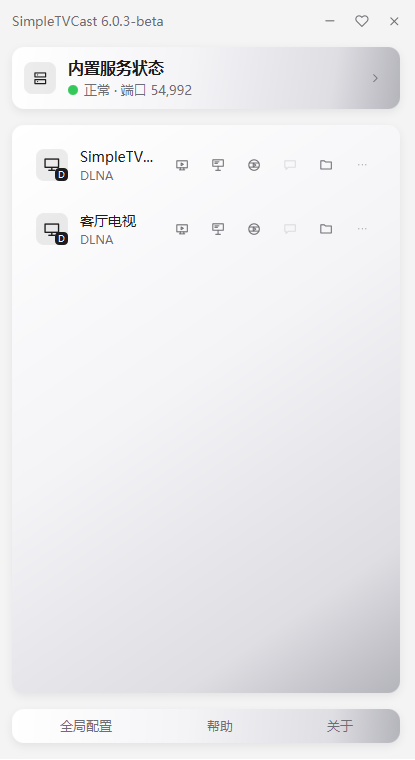

即开即投
软件打开后自动发现同一局域网内（连接同一个无线Wi-Fi或同一网段的以太网有线网络）的无线显示设备，点击设备旁的投屏图标即可开始投屏。
简单电视投屏(SimpleTVCast) · 免费 · 无广告 · 无水印 · 隐私安全
Windows电视投屏工具，无需安装电视 App，同一局域网内（连接同一个无线Wi-Fi或同一个以太网有线网络） 下即开即投。免费商用、无水印、不限制时长、不限制画质与同时投屏台数。

投屏中
扫码关注，获取投屏软件更新信息、投屏技巧使用与问题反馈
01 / 为何简单
不需要投屏器，不需要扫码配对，不需要电视端装任何 App。电视开机联网，电脑点一下，画面就到了。
软件打开后自动发现同一局域网内（连接同一个无线Wi-Fi或同一网段的以太网有线网络）的无线显示设备，点击设备旁的投屏图标即可开始投屏。
基于 DLNA / AirPlay 协议直接与电视通信，电视开机联网即可投屏，无需进入电视的投屏配对界面，也无需电视端确认。
免费、无广告、无水印、不限制画质、不限制投屏数量；
保护隐私安全，不记录、不上传投屏内容与使用习惯，零数据收集。
02 / 投屏方式
从实时桌面镜像到PPT演示投屏、再到网络直播，每个方式都有其适用场景。
实时桌面镜像
把整个桌面或指定窗口的低延迟画面投到电视，支持多显示器选择、剪裁区域与分辨率 / 帧率 / 码率调整。
实时采集桌面并编码为直播流下发给电视，支持多显示器选择、剪裁区域与分辨率 / 帧率 / 码率调整。
PPT 演示投屏
为教学课件、会议室报告设计的演示投屏，设备列表显示为投影幕布图标。
与实时屏幕镜像互斥，按帧率推送画面，显著降低长时间演示时的 CPU 与 GPU 占用。
视频 · 音乐 · 图片
选择目录后自动扫描媒体文件，支持连续投屏、图片轮播与单首无限循环。
支持 mkv、avi、AV1 等电视不直接支持的格式自动转码；播放列表与进度会在下次打开时自动还原。
网络流媒体投屏
粘贴网络视频地址即可直投电视，支持 RTSP、RTMP、HTTP-FLV、HLS、Dash 等常见协议。
支持 RTSP、RTMP、HTTP-FLV、HLS、Dash 等网络地址直投；投送过的地址自动保存为历史，最多 20 条。
手机投送到电脑
安卓、iOS、平板与电脑通过 DLNA 协议投送到本软件，实时显示对方的内容和画面。
本软件也能作为接收端：手机相册、视频 App 里的「投屏」按钮即可选中电脑所在设备。
电脑投电脑
在接收端开启接收功能后，局域网内其他电脑即可把桌面画面或多媒体投送到本机，用于同网段内的屏幕分享。
仅共享画面与多媒体，不提供键鼠控制；投送端与接收端需处于同一局域网，接收功能需在软件中手动开启。
03 / 使用场景
从教室、会议室到客厅与户外，把电脑画面一键送到手边的显示设备，同一个按钮覆盖大多数无线投屏需求。
01 · 教学
老师用笔记本电脑无线投课件到教室的智能电视、电子白板或投影仪，讲解、演示与随堂视频一体化。
02 · 会议
公司开会时把笔记本上的 PPT、报表与演示报告直接投到会议室投影仪或电子白板，不用再插拔线缆。
03 · 家庭
家里的笔记本电脑与台式机把视频、音乐、图片投到电视或投影，全家人一起看片、听歌、回顾相册。
04 · 游戏
电脑投屏到支持无线投屏的显示器作为副屏，或投到电视当副屏，一边游戏一边观影娱乐两不误。
05 · 户外
户外婚庆与团体娱乐时，用笔记本电脑把婚礼视频、背景音乐与互动内容投到投影仪和户外大屏。
06 · 更多玩法
不止投屏画面：还可以把电脑上的音乐投到智能音箱播放，让公共广播、背景音乐也无需线缆。
以上场景均在同一局域网内直接投屏：电脑与显示设备连入同一网络（同一 Wi-Fi 或有线网络）即可，无需安装电视端 App。
04 / 能力对比
对照系统自带投屏与常见商业投屏软件，看看「简单」到底省在哪一步。
| 能力项 | 简单电视投屏（SimpleTVCast） | 系统自带投屏 | 常见商业投屏 |
|---|---|---|---|
| 免费、无广告 | 支持 | 支持 | 部分 |
| 无需电视端 App、无需扫码配对 | 支持 | 支持 | 部分 |
| 桌面镜像 + 系统声音同步 | 支持 | 部分 | 部分 |
| 视频 / 音乐 / 图片投屏 | 支持 | 不支持 | 支持 |
| 网络流媒体（直播 / RTSP / HLS） | 支持 | 不支持 | 不支持 |
| 多台设备同时投屏 | 支持 | 不支持 | 部分 |
| 上传用户数据 | 无 | 无 | 未知 |
| 限制画质、码率或投屏台数 | 不限制 | 不限制 | 有限制 |
对比依据：软件 README 中的能力对比资料与公开信息整理，仅作定性参考；各产品功能以其官方说明为准。
05 / 设备支持
支持所有遵循 DLNA / AirPlay 协议的无线显示设备：智能电视、投影仪、机顶盒、智能音箱、投屏器、电子白板。
主流品牌全系列均可直接投送，2015 年后支持联网的电视基本无需额外设置。
已验证
智能投影、家用投影与商用投影均可被发现，部分低端型号需用遥控器开启投屏开关。
已验证
移动、电信等运营商机顶盒，以及各类智能盒子，部分型号需手动开启无线投屏。
部分需手动设置
带屏智能音箱可接收桌面镜像与视频投屏，普通智能音箱可接收纯音乐投屏。
网友实测可用
主流品牌的投屏器可完整支持桌面镜像、视频、音乐、图片与直播投屏。
网友实测可用
会议平板、交互式电子白板与部分支持 DLNA 的显示器同样可以接收投屏。
网友实测可用
前提：投屏电脑与显示设备在同一网段。未列出的品牌仅代表未经测试，不代表不支持；电视开机联网即可，无需打开投屏配对界面。
06 / 隐私安全
软件完全离线运行，仅在局域网内按 DLNA 协议发送必要信号。以下承诺可自行验证。
仅在「关于软件」「软件更新」时访问官网检查版本号，其余时间不与任何互联网服务器通信。
只在主动 / 被动发现设备与投屏时，在家庭或办公局域网内发送 DLNA 必要信号。
不收集、不记录、不上传任何个人信息、投屏内容、文件列表或使用习惯。
可用系统自带防火墙或网络监控工具观察软件的全部网络行为，欢迎监督。
07 / 下载与安装
两个安装包，按需选择。
支持windows vista以上包括（windows7、windows8、windows10、windows11）
绿色免安装版，内置运行环境。解压后直接双击目录内的 SimpleTVCast.exe 即可运行。
下载绿色版Windows 安装包，双击运行安装向导，自动创建桌面快捷方式并注册卸载入口。
下载安装包在 Release 附件中下载 zip 或 msi。
zip 解压即用；msi 双击安装。两者均无需 Java 环境。
等待自动发现电视，点击设备旁的投屏图标即可开始。
备用下载渠道：Gitee 仓库；内测与问题反馈：QQ 群 1092312834。微信公众号：eguid。软件免费商用，不限制功能与投屏台数。
08 / 更新日志
从 1.0 到 6.0，每一版都在减少操作、提高画质、压低延迟。